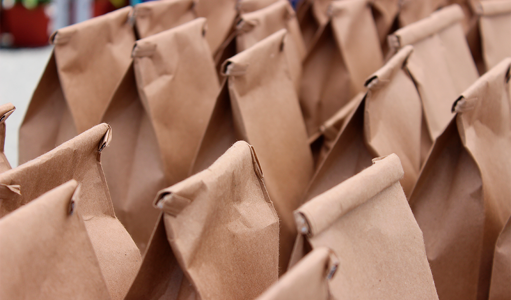

FoodRescue:O App Anti Desperdício e a Fome
Olá, amantes da inovação e da solidariedade! Estamos empolgados em apresentar a vocês uma solução que está transformando a maneira como lidamos com o desperdício de alimentos e, ao mesmo tempo, levamos refeições nutritivas para quem mais precisa.
Apresentamos o Food Rescue, o aplicativo que une tecnologia e empatia para combater a fome e o desperdício alimentar.
Desperdício Alimentar: Um Desafio Global
O desperdício de alimentos é um problema que atinge todo o mundo. Restaurantes, mercados e depósitos muitas vezes descartam produtos que, apesar de ainda estarem em boas condições, não serão mais vendidos.
Enquanto isso, muitas pessoas sofrem com a fome e a insegurança alimentar. É aí que o Food Rescue entra em cena.
Imagine um banco de alimentos digital, onde os estabelecimentos podem doar os alimentos que não serão mais comercializados. O Food Rescue coleta informações sobre esses alimentos e, em vez de deixá-los se perder no desperdício, conecta-os a projetos sociais, entidades comunitárias e pessoas em situação de vulnerabilidade que necessitam dessas refeições.
Uma Mudança de Paradigma
O Food Rescue não é apenas um aplicativo, é uma mudança de paradigma. Ele nos convida a repensar a maneira como tratamos os alimentos e a importância de compartilhar recursos para construir uma sociedade mais justa e inclusiva. Ao utilizar a tecnologia como uma ferramenta de impacto social, estamos unindo esforços para enfrentar a fome de forma sustentável.
Impacto Social Real
A cada doação feita pelo Food Rescue, um impacto social real é gerado. Projetos que distribuem cestas básicas, marmitas nutritivas e refeições para a população em necessidade são beneficiados. A comunidade se fortalece, a dignidade das pessoas é preservada e o meio ambiente também agradece, já que evitamos o desperdício de alimentos que contribuiria para a poluição.
Seja Parte da Mudança
Queremos convidar você a se juntar a nós nessa jornada de solidariedade e inovação. Baixe o Food Rescue e seja parte dessa rede de compartilhamento que está fazendo a diferença na vida das pessoas e no futuro do nosso planeta. A cada doação feita, a cada refeição compartilhada, estamos construindo um mundo melhor.
O Food Rescue é mais do que um aplicativo, é um movimento. Um movimento que nos desafia a repensar nossas ações diárias, a valorizar cada alimento e a estender a mão para quem precisa. Juntos, estamos revolucionando o combate à fome e promovendo uma cultura de solidariedade. Faça parte dessa revolução, baixe o Food Rescue e seja a mudança que o mundo precisa ver. Juntos, somos imparáveis!
Restaurantes, bares, lanchonetes
e padarias podem doar comida que sobra? Sim!
fonte:https://www.news.ifood.com.br/como-os-restaurantes-podem-doar-comida-de-forma-segura/

Desde 24 de junho de 2020, a Lei 1016 autoriza os estabelecimentos que produzem ou fornecem alimentos (in natura, industrializados e refeições prontas) a doar o que não conseguiram vender e assim contribuir para reduzir o avanço da fome e da insegurança alimentar no Brasil, onde 33 milhões de pessoas não têm o que comer.
Infelizmente, muita comida é desperdiçada. Um estudo feito pelo Programa das Nações Unidas para o Meio Ambiente (PNUMA) estimou que, em 2019, 931 milhões de toneladas de alimentos, ou 17% do total disponível aos consumidores de todo o mundo, foram para o lixo de residências, varejo, restaurantes e outros serviços alimentares. Essa quantidade lotaria 1,6 milhão de aviões do modelo Airbus A380, a maior aeronave comercial do mundo.
A fatia dos restaurantes e outros estabelecimentos de serviços de alimentação nesse desperdício é de 5%, segundo a ONU —e pode ser reduzida por meio da doação daquilo que não foi vendido e ainda pode ser consumido (e dentro do prazo de validade) para quem precisa ou para intermediários, como ONGs e bancos de alimentos.
Para descobrir como restaurantes, bares, lanchonetes e padarias podem doar alimentos de maneira segura, o iFood News conversou com as especialistas Keli de Lima Neves, mestre em nutrição e dietética e consultora de segurança de alimentos na BRQuality, e Adriana Leal, nutricionista da ONG Gastromotiva.
O que pode ser doado?
Segundo a legislação, todo alimento que esteja dentro do prazo de validade e seguro para consumo, sem contaminação física, química ou microbiológica. “O que precisamos nos perguntar na hora que estamos separando um alimento para doação é se estamos doando algo que comeríamos. Essa é uma premissa básica”, diz Keli.
Por isso, nem todo o excedente pode ser doado. As sobras, que são alimentos não distribuídos e mantidos em condições de segurança de conservação podem ser doadas. Já os restos, ou seja, tudo aquilo que foi servido e manipulado pelo cliente, não. “A cozinha é como se fosse um cofre que protege a comida”, diz Adriana.
Como essa doação tem de ser feita?
Alimentos industrializados e não perecíveis precisam estar dentro do prazo de validade. “Se a embalagem foi violada, mas imediatamente houve um cuidado para colocar em outra embalagem, esse alimento pode ser doado”, a nutricionista da Gastromotiva.
Se o alimento precisa ser mantido congelado ou refrigerado, deve permanecer sob essas condições até a hora em que for disponibilizado por quem irá receber a doação.
Já alimentos prontos, como as refeições, têm todo um cuidado que deve ser seguido. Nada muito diferente do que já prevê a Resolução nº 216 da Anvisa (Agência Nacional de Vigilância Sanitária). Segundo Adriana, se o estabelecimento segue essas normas, está habilitado a doar com segurança seu excedente.
Por enquanto, não há uma regulação sobre como essa doação deve ser feita. A Agência Nacional de Vigilância Sanitária (Anvisa), anunciou, em 2021, que iniciou um processo de Análise de Impacto Regulatório (AIR) de regularização da doação de alimentos com segurança sanitária. Esse estudo faz parte da Agenda Regulatória 2021-2023 do órgão e está previsto para ser concluído em 2023 (sem data estipulada).
De uma forma geral, explica Keli, quem doa alimentos prontos deve:
- Manter sob correta condição de armazenamento até o momento do consumo. Ou seja, a comida que estava aquecida deve ser refrigerada depois do encerramento das atividades da cozinha e não pode ficar exposta à temperatura ambiente.
- Utilizar embalagem apropriada (descartável ou retornável), limpa e fechada.
- Identificar o conteúdo da embalagem com: tipo de alimento; data de preparação e temperatura ideal de conservação.
Intermediários do processo de doação (ONGs, bancos de alimentos, Igrejas e outras instituições) podem fazer uso de duas cartilhas do governo federal para avaliar os alimentos que foram doados e as recomendações de manipulação segura dos alimentos que chegam até eles.
Para quem o restaurante pode doar?
A legislação aprovada em 2020 é bem ampla. Restaurantes, lanchonetes, cooperativas, supermercados, hospitais e estabelecimentos que forneçam refeições para seus empregados ou clientes em geral podem doar de maneira direta (ou seja para uma pessoa ou grupo de pessoas), em colaboração com o poder público, bancos de alimentos, entidades beneficentes de assistência social ou entidades religiosas.
“Eu posso doar para a creche, ou para o asilo, ou para a Igreja, ou para quem tiver perto de mim”, diz Adriana. “Essa lei veio para facilitar a gente matar um pouco da fome do vizinho do restaurante. Não tem um restaurante que alguém não bata na porta e não peça comida. É pegar o que tem e ir ali perto doar. Não precisa ir longe”, sugere.
O que mais pode ser feito para evitar o desperdício de comida?
A lei 1016 foi criada para se tentar combater o desperdício de alimentos e incentivar a doação de excedentes para o consumo humano. Mas, além disso, é possível adotar algumas atitudes para que parte dos custos de um restaurante não vá parar no lixo.
Cuidar do estoque, fracionar as compras, adotar modos de preparo que causem um desperdício menor são algumas ações. Além disso, é possível conhecer melhor a clientela e identificar aquilo que sobra e promover alterações no cardápio ou na apresentação dos pratos.
“É preciso pensar na forma consciente de como levar a refeição para a mesa, para não ter restos de alimentos. Se tiver de sobrar algo, que seja na cozinha, que poderá ser doado”, diz Keli.
Nome da Startup: FoodRescue
A FoodRescue é uma startup que desenvolve um aplicativo de gestão de alimentos desperdiçados em restaurantes. A plataforma conecta restaurantes a instituições de caridade locais, permitindo que os restaurantes doem alimentos excedentes em vez de descartá-los. O objetivo da FoodRescue é reduzir o desperdício de alimentos e ajudar a combater a fome, criando uma solução eficiente e sustentável para o problema.
Recursos e Funcionalidades:
- Cadastro de Restaurantes: Os restaurantes podem se cadastrar na plataforma, fornecendo informações sobre seus horários de funcionamento, tipo de cozinha e capacidade de doação.
- Rastreamento de Alimentos: Os restaurantes podem registrar os alimentos excedentes que estão disponíveis para doação, especificando o tipo de alimento, quantidade, data de validade e localização.
- Notificações em Tempo Real: Quando um restaurante registra alimentos disponíveis para doação, as instituições de caridade locais recebem notificações em tempo real, informando sobre a disponibilidade dos alimentos.
- Solicitação de Coleta: As instituições de caridade podem solicitar a coleta dos alimentos diretamente pelo aplicativo, agendando uma retirada conveniente.
- Roteirização Inteligente: O aplicativo utiliza algoritmos inteligentes para otimizar as rotas de coleta, minimizando o tempo e os recursos necessários para a retirada dos alimentos.
- Feedback e Avaliação: As instituições de caridade podem fornecer feedback sobre a qualidade dos alimentos recebidos, ajudando os restaurantes a aprimorar seus processos de doação.
- Estatísticas e Relatórios: A plataforma fornece estatísticas e relatórios detalhados sobre a quantidade de alimentos doados, impacto ambiental e benefícios sociais gerados pela FoodRescue.
- A FoodRescue pode adotar os seguintes modelos de monetização:
- Taxa de Assinatura: A plataforma pode cobrar uma taxa mensal ou anual dos restaurantes participantes para utilizar os recursos e benefícios da FoodRescue.
- Comissão por Transação: A cada doação concluída entre restaurantes e instituições de caridade, a FoodRescue pode receber uma comissão sobre o valor dos alimentos doados.
- Publicidade e Parcerias: A startup pode explorar oportunidades de parcerias e publicidade, permitindo que empresas e organizações relacionadas à sustentabilidade alimentar promovam seus serviços ou produtos no aplicativo.
- Serviços Adicionais: A FoodRescue pode oferecer serviços adicionais, como treinamento para redução de desperdício de alimentos nos restaurantes ou consultoria em sustentabilidade alimentar.
Modelo de Negócio:
Potenciais Parceiros
- -Restaurantes e estabelecimentos de alimentos locais interessados em reduzir o desperdício alimentar.
- -Instituições de caridade e organizações que lidam com a distribuição de alimentos para comunidades carentes.
- -Empresas e organizações relacionadas à sustentabilidade alimentar, que desejam promover seus serviços ou produtos no aplicativo.
- Implementar a startup FoodRescue envolverá etapas como o desenvolvimento do aplicativo, estabelecimento de parcerias estratégicas, marketing e aquisição de usuários, além de garantir uma experiêcia de usuário eficiente e um modelo de negócio sustentável. É fundamental realizar pesquisas de mercado, compreender as necessidades dos restaurantes e instituições de caridade, e adaptar a solução para atender às demandas específicas do mercado brasileiro.
Implementação do projeto FoodRescue:
- Desenvolvimento do Aplicativo: Uma equipe de desenvolvimento de aplicativos e site para criar o aplicativo FoodRescue, intuitivo, responsivo e compatível com dispositivos móveis.
- Cadastro de Restaurantes e Instituições de Caridade: Campanha de marketing para atrair restaurantes e instituições de caridade para se cadastrarem na plataforma FoodRescue. Ofereça incentivos iniciais, como taxas de assinatura reduzidas ou período de teste gratuito para atrair participantes.
- Estabelecimento de Parcerias: Identificar organizações e empresas relacionadas à sustentabilidade alimentar que possam se tornar parceiras estratégicas. Isso pode incluir empresas de logística, fornecedores de alimentos e organizações não governamentais (ONGs) que trabalham com a distribuição de alimentos.
- Testes e Iterações: Realizar testes extensivos do aplicativo FoodRescue para garantir que todos os recursos funcionem corretamente. Ouvir o feedback dos usuários e fazer melhorias com base nas necessidades e sugestões recebidas.
- Lançamento e Marketing: Planejar um lançamento estratégico do aplicativo FoodRescue, incluindo uma campanha de marketing online e offline. Usando mídias sociais, parcerias com influenciadores, eventos e publicidade para aumentar a conscientização e atrair usuários.
- Suporte ao Cliente: Estabelecer um sistema eficiente de suporte ao cliente para responder a perguntas, solucionar problemas e oferecer assistência aos restaurantes e instituições de caridade que utilizam o aplicativo.
- Monitoramento e Análise: Implementar ferramentas de monitoramento e análise para acompanhar as métricas-chave, como o número de restaurantes cadastrados, doações realizadas, satisfação dos usuários e impacto ambiental gerado. Use essas informações para ajustar e aprimorar constantemente a plataforma.
- Monetização: Implementar o modelo de monetização escolhido, como cobrança de taxa de assinatura dos restaurantes participantes, comissão por transação concluída ou parcerias e publicidade com empresas relacionadas.
- Expansão e Escala: À medida que o FoodRescue ganha tração e usuários, explorar oportunidades de expansão para outras cidades e regiões.